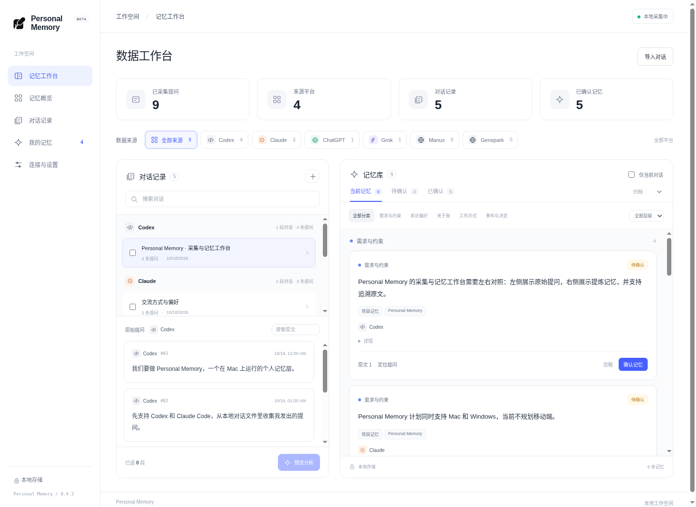

01
来源分类
按平台、会话和消息整理你的提问。持续更新同一段对话，重复同步也不会重复入库。
每一段思考，都有来处按来源整理 AI 对话。
提炼偏好、需求与项目记忆，保留原文依据。
“帮我用 Swift 实现这个想法…”
“解释得简洁一点，给个例子。”
“整理下这个产品的用户需求。”
按平台分类，按对话追溯。
按平台、会话和消息整理你的提问。持续更新同一段对话，重复同步也不会重复入库。
每一段思考，都有来处通过 OpenRouter 提炼你明确表达的身份信息、交流偏好，以及需求与具体约束。
每一条记忆，都附有证据记忆保存在你的 Mac 上，随时导出 JSON。你决定采集哪些来源、发送哪些内容、确认哪些记忆。
你的记忆，由你定义本地处理与人工审核。

本地文件同步、网页扩展，或预览桌面窗口并勾选用户提问。
选择对话、预览提问原文，确认后通过你的 OpenRouter 账户分析。
查看每条记忆的原文证据，确认或忽略，逐步积累自己的记忆层。
没有 Personal Memory 云端账户，不把你的完整对话上传到我们的服务器。
每一次向 AI 发送内容，都有明确的预览与确认。
由你开启本地来源，随时暂停。只保留用户提问。
Key 通过 macOS 系统安全存储加密，不进入网页或导出文件。
SQLite 本机存储，数据库本身未加密。分析内容会交给 OpenRouter 及模型提供商处理。
本地监听 Codex 和 Claude Code。Chrome / Edge 扩展提供 Claude、Grok、Manus、Genspark 等网站的待验证规则，v0.5.0 新增豆包、DeepSeek、Kimi、通义及元宝模板，也可自定义 HTTPS 站点。需逐站预览用户消息并授权；仅采集已加载的会话文本，不读取草稿。网页改版后可能需要调整规则。也支持 JSON 导入。
v0.5.0 增加 Mac 窗口预览：授权辅助功能后选择应用，只勾选已发送的用户提问再入库。支持独立标记豆包、ChatGPT、Claude、Cursor、Windsurf、Trae 和自定义平台；不会自动区分消息角色，各客户端仍需实测。无法读取时可使用网页版或文件导入。
当前版本开源，应用本身不收取订阅费。你需要自己的 OpenRouter API Key，分析费用由 OpenRouter 按实际调用计费。应用可输入模型 ID，并查询 DeepSeek 实时模型列表。DeepSeek V4 Flash 的可用性须以 OpenRouter 账户实际返回为准。
不会自动接受。分析 Agent 只生成候选记忆，并附带提问证据。模型可能误判，因此每条候选都需要你确认。身份类记忆只应基于你的明确表述，关于某个主题的提问不等于你的身份。
这是早期测试版本。自动发布流程会标明是否已签名和公证；v0.5.3 起测试包使用完整性签名并检查打包后实际启动；仍未配置 Apple Developer ID 和公证，macOS 可能拦截。请先查看 GitHub Release 说明与 SHA-256 校验值。若 macOS 拦截，可按 Apple 官方指引在“系统设置 → 隐私与安全性”中允许；不要全局关闭 Gatekeeper。
首版支持采集、分析、审核以及 JSON 导出，尚未提供 MCP 服务或跨平台自动注入。未来可在你授权的范围内，将已确认记忆提供给其他 Agent。
macOS 13+ · 本地个人记忆工作台
安装包尚未发布 · 请查看 GitHub Release 状态
发布说明与校验值 ↗︎